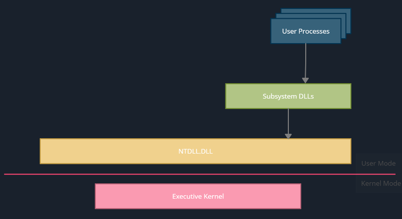

Introduction
Before beginning the malware development journey, it is necessary to prepare the development workspace by installing malware development and reverse engineering tools. These tools will aid one in the development and analysis of the malware and will be used throughout the modules.
Reverse Engineering Tools
Several of the tools mentioned focus more on reverse engineering rather than development. It is essential to reverse engineer the malware built to fully understand its internal workings and have an understanding of what the malware analysts will see upon inspecting the malware.
Tools To Install
Install the following tools:
Visual Studio
Visual Studio is an integrated development environment (IDE) developed by Microsoft. It is used to develop a wide array of software such as web applications, web services and computer programs. It also comes with development and debugging tools for building and testing applications. Visual Studio will be the main IDE used for development in this handbook.

x64dbg
x64dbg is an open-source debugging utility for x64 and x86 Windows binaries. It is used to analyze and debug user-mode applications and kernel-mode drivers. It provides a graphical user interface that allows users to inspect and analyze the state of their programs and view memory contents, assembly instructions, and register values. With x64dbg, users can set breakpoints, view stack and heap data, step through code, and read and write memory values.

The main "CPU" tab has 4 screens:
The remaining tabs also provide useful information but they will be discussed in the modules when they are used.
PE-Bear
PE-Bear is a free, open-source tool designed to help malware analysts and reverse engineers quickly and easily analyze Windows Portable Executable (PE) files. It helps to analyze and visualize the structure of the PE file, view the imports and exports of each module, and perform static analysis to detect anomalies and possible malicious code. PE-bear also includes features such as PE header and section validation, as well as a hex editor.

Process Hacker
Process Hacker is an open-source tool for viewing and manipulating processes and services on Windows. It is similar to Task Manager but provides more information and advanced features. It can be used to terminate processes and services, view detailed process information and statistics, set process priorities and more. Process Hacker will be useful when analyzing running processes to view items such as loaded DLLs and memory regions.

Msfvenom
Msfvenom is a Metasploit framework standalone payload generator that allows users to generate various types of payloads. These payloads will be used by the malware created in this handbook.